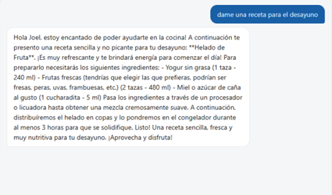
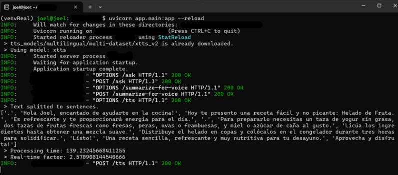

Justi — Local AI Cooking Assistant
Conversational Kitchen Assistant Powered by Local AI
Justi is a conversational assistant that helps with everyday kitchen tasks. It suggests recipes, guides you through them step by step, and lets you interact through text or voice. Everything runs entirely on the local machine: a local LLM (Mistral, served via Ollama) handles the conversation, while local speech-to-text and text-to-speech engines (XTTS v2) enable voice interaction. No conversation data leaves the device.

StackUsed
- Backend: FastAPI (Uvicorn).
- Language model: Mistral 7B via Ollama (local).
- Voice synthesis: XTTS v2 by Coqui (local TTS).
- Speech recognition: local Speech-to-Text.
- Database: SQLite (users, messages, memories, recipes).
- Recipe search: Spoonacular API, with local LLM fallback.
How it Works
- The frontend sends requests to a FastAPI backend over REST.
- On every message, Justi builds a dynamic prompt using stored memories (name, diet, allergies, preferences).
- New preferences are detected via regex and saved only after explicit user confirmation.
- Recipe requests are checked against Spoonacular first; if it fails, the local LLM generates one instead.
- Long responses are summarized before being sent to the local TTS engine.
